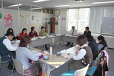

| 【日 時】 | 11月４日(水)13：30～15：30 |
| 【場 所】 | 埼玉県生協連・会議室 |
| 【出席者】 | 10人(埼玉消団連、母親大会連絡会、コーペル、埼玉県生協連、生協ネットワーク協議会、さいたま市消団連) |
伊藤代表幹事・事務局長あいさつ
2003年に食品安全基本法が出来て、食品衛生法も改正されました。国の食品衛生監視指導計画の重点に基づき、県の計画案が策定されます。そして、消団連として要望書を提出しています。その前段階として、本日の学習会があり、20年度の監視指導計画の結果と今後の課題を学習したいと思います。
| ■ | 議 題 | ||||||||||||||
| １． | 学習懇談会 | ||||||||||||||
|
「平成20年度埼玉県食品衛生監視指導結果と今後の課題について」
|
|||||||||||||||
|
|||||||||||||||
| ２． | 平成22年度食品衛生監視指導計画に対する要望案について | ||||||||||||||
| ３． | 報告・資料提供等 | ||||||||||||||